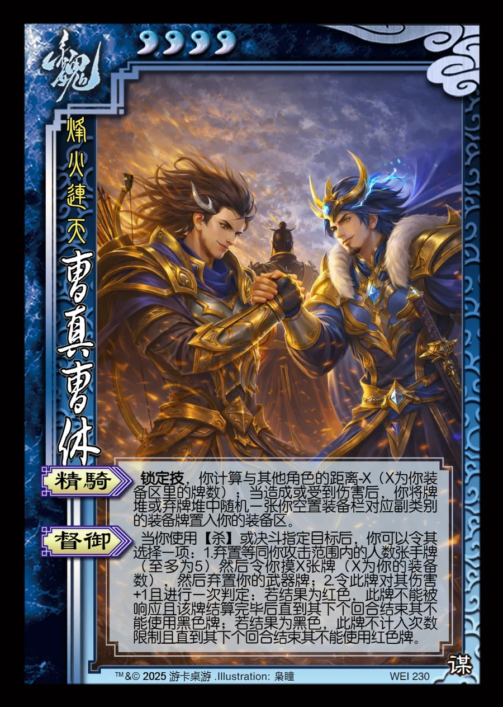

点击卡面查看大图
魏
曹真曹休
♥4烽火连天
精骑锁定技
锁定技，你计算与其他角色的距离-X（X为你装备区里的牌数）；当造成或受到伤害后，你将牌堆或弃牌堆中随机一张你空置装备栏对应副类别的装备牌置入你的装备区。
督御
当你使用【杀】或决斗指定目标后，你可以令其选择一项：1.弃置等同你攻击范围内的人数张手牌（至多为5）然后令你摸X张牌（X为你的装备数），然后弃置你的武器牌；2.令此牌对其伤害+1且进行一次判定：若结果为红色，此牌不能被响应且该牌结算完毕后直到其下个回合结束其不能使用黑色牌；若结果为黑色，此牌不计入次数限制且直到其下个回合结束其不能使用红色牌。